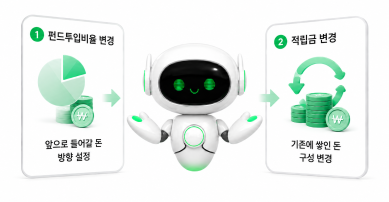

추천은 VFA가,
변경은 고객님이 직접
VFA는 고객님께 맞는 펀드 포트폴리오를 안내해요. 실제 변경 신청은 가입한 보험사에서 진행해 주세요.
보험사 홈페이지·앱·고객센터에서 펀드변경을 신청할 수 있어요.
펀드변경 어떻게 하나요?
※ 메뉴 이름은 펀드변경 또는 펀드관리 일 수 있어요.
변경할 것은 두 가지예요
펀드변경은 아래 두 항목을 함께 확인하면 더 정확하게 적용할 수 있어요.

-
펀드투입비율 변경
앞으로 납입되는 보험료가 어떤 펀드로 들어갈지 정해요. (앞으로 들어갈 돈의 방향 설정)
-
적립금 변경
이미 쌓여 있는 적립금을 새로운 구성으로 바꿔요. (기존에 쌓인 돈의 구성 변경)
처리기간과 도움 안내
펀드변경은 반영까지 보통 2~5영업일이 걸릴 수 있어요.
꼭 기억해 주세요.
도움이 필요하신가요?
담당 FA : {{ info.member_name }}
{{ position }}
자주 묻는 질문
지금 바로 변경해야 하나요?

추천 포트폴리오는 생성 시점 기준으로 산출됩니다. 최적의 결과를 위해 가급적 빠른 시일 내 변경하는 것을 권장합니다.
펀드변경 수수료가 있나요?
대부분의 변액보험은 펀드변경 수수료가 없거나 매우 낮은 수준입니다. 자세한 내용은 가입하신 보험사 약관을 확인해주세요.
VFA가 자동으로 펀드를 변경해주나요?
아니요. VFA는 투자자문 및 추천 정보를 제공하며, 실제 펀드변경은 고객님이 직접 보험사를 통해 진행해야 합니다.
리밸런싱 알림은 얼마나 자주 오나요?
30일, 60일, 90일 중 원하시는 주기를 직접 선택하실 수 있습니다. 기본값은 90일이며, 선택한 주기에 맞춰 카카오톡으로 안내해 드립니다.